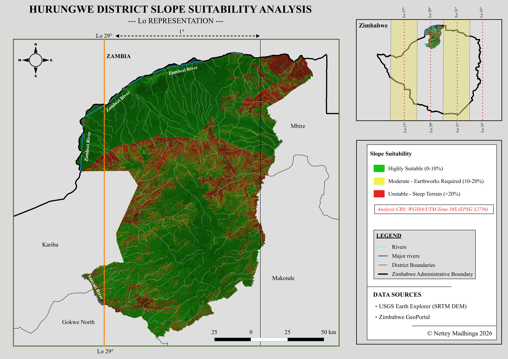

Hurungwe District Slope Suitability Analysis
Terrain gradient classification and Southern African Gauss Conform Lo 29° meridian zone framing for civil infrastructure and land development.

Project Overview
Bordered by the Zambezi River to the north and the Sanyati River to the southwest, Hurungwe District features dramatic escarpment transitions between the Zambezi Valley floor and the central plateau. This suitability analysis evaluates terrain steepness to guide road alignment, settlement planning, and earthworks estimation.
Methodology & Geodetic Framing
- SRTM DEM Slope Derivation: Computed percentage slope rasters in WGS 84 / UTM Zone 36S (EPSG:32736) from SRTM elevation data to ensure accurate horizontal-to-vertical gradient ratios.
- Engineering Suitability Reclassification: Segmented terrain into three operational zones: Highly Suitable (0–10%) for standard construction, Moderate — Earthworks Required (10–20%), and Unstable — Steep Terrain (>20%) prone to erosion and slope failure.
- Lo 29° Meridian Zone Integration: Incorporated Zimbabwe's national Gauss Conform meridian belts (Lo 27°, Lo 29°, Lo 31°, Lo 33°) in both the main map frame and national locator inset to illustrate survey zone coverage across the district.
Key Findings
Steep, unstable escarpment slopes (>20%) concentrate along the Zambezi escarpment drop-off and dissected tributaries, whereas gentle gradients (0–10%) dominate the northern valley floor and southern plateau interiors.